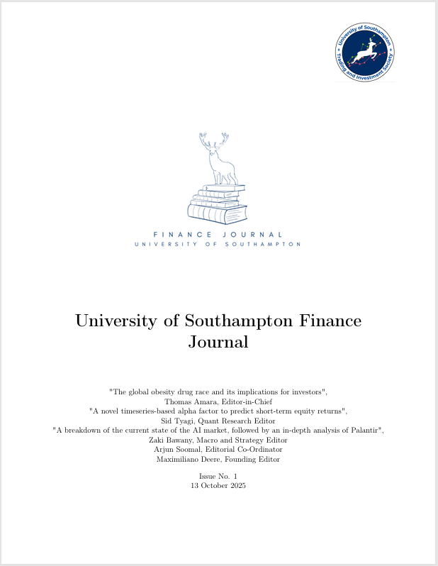
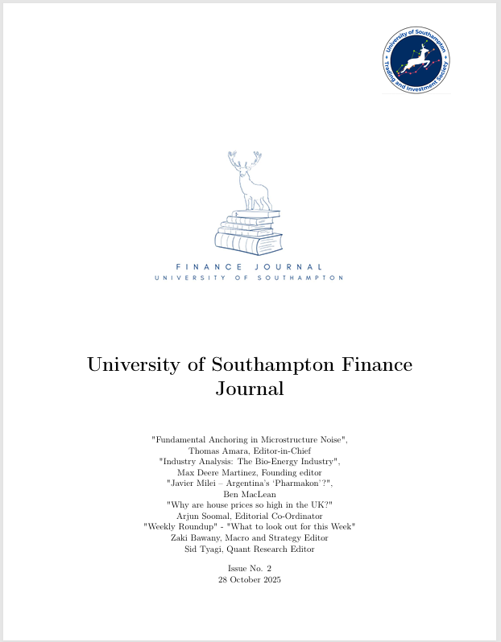
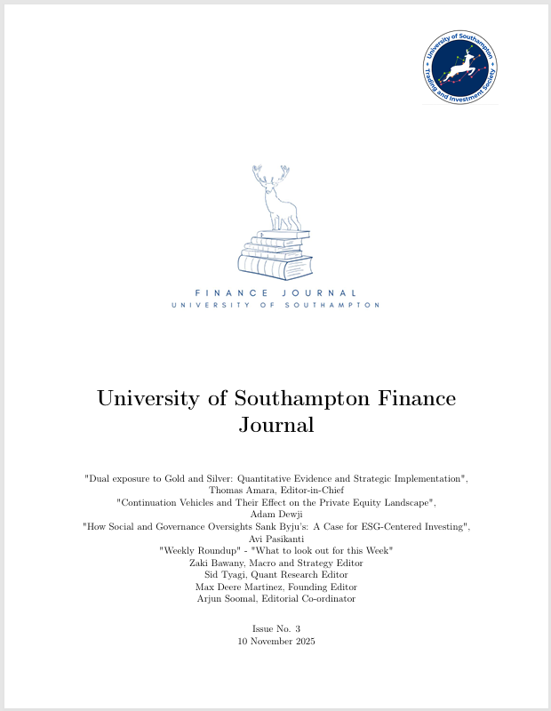
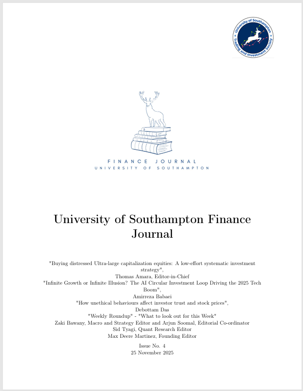
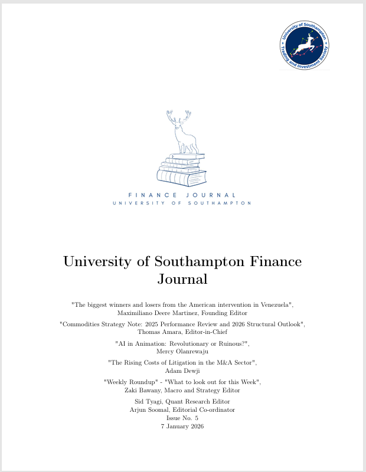
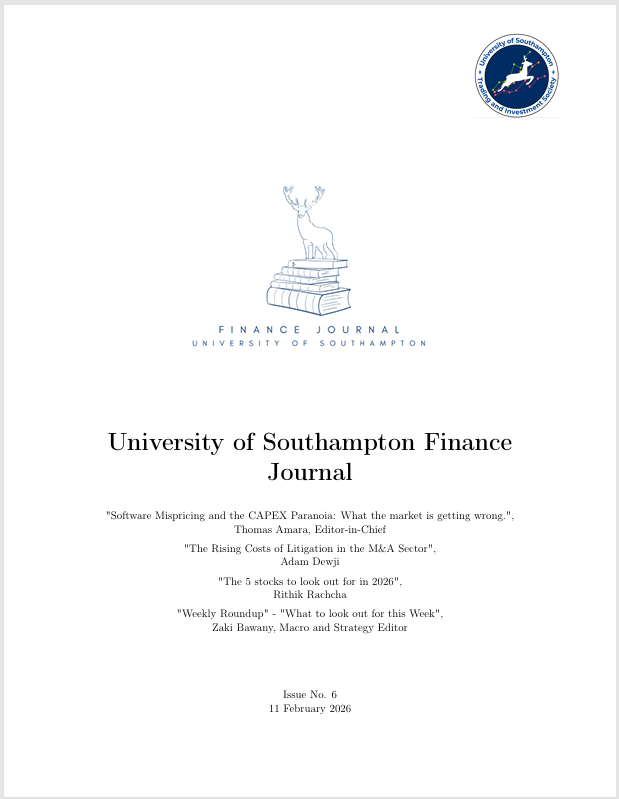

Student-led research publication covering markets, corporate finance, macroeconomics and quantitative finance.
The Southampton Finance Journal publishes analytical research written by members of the University of Southampton Investment Fund and the Trading and Investment Society.
The journal focuses on rigorous financial analysis, combining academic research with practical market insights across asset classes including equities, macro strategy, commodities and quantitative finance.






The journal benefits from the guidance of academic researchers in finance and economics.